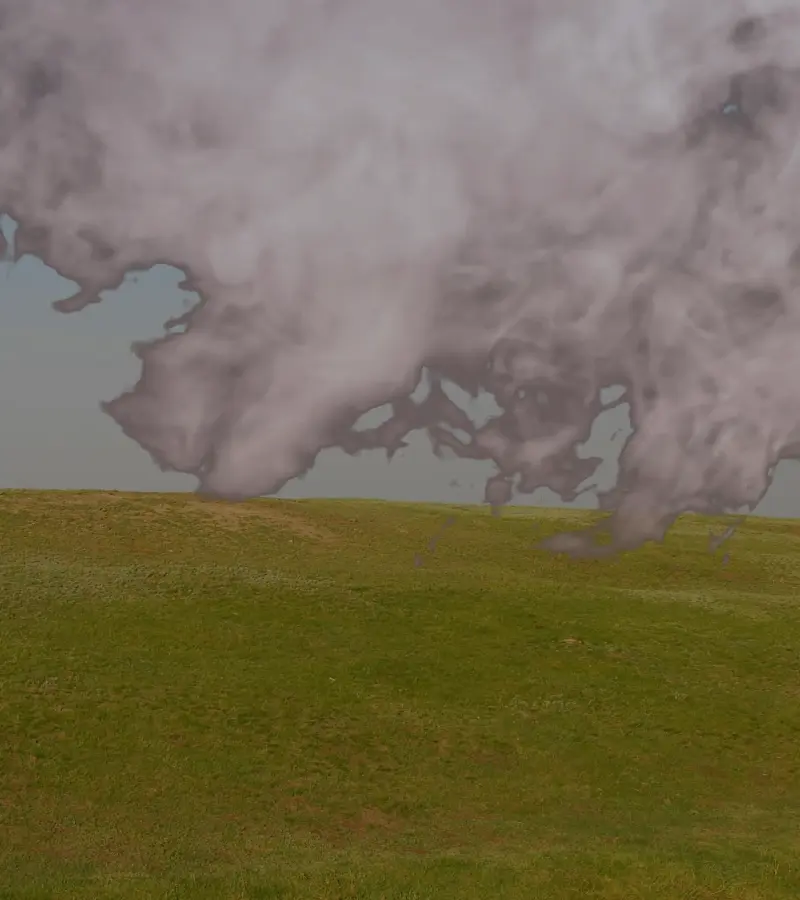
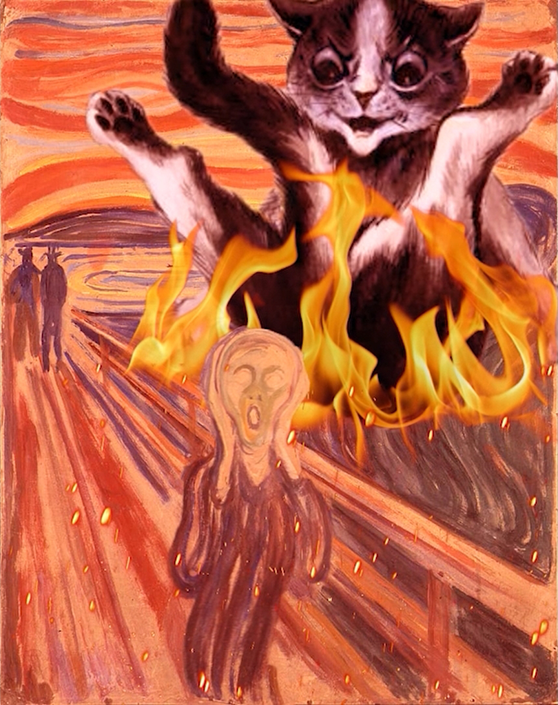

Video Editing
Grabbing your audience's attention with a well-edited video is a reliable way to grow your brand, but good editing takes time away from other projects. I can take care of that burden and free up your time.
Whether you wish to entertain, provoke thoughtful discussion or make people laugh, I will provide quality editing that matches the tone of your content.
Enhance your Message

Animation and special effects can be used to emphasize key parts of your videos. Do you need to add emphasis to a movement? Maybe you want the colors to better match your mood? With the right effects, your videos will grab even more people than before.
In a video advertising a concept for an educational game with environmental messages, I set the mood by adjusting the colors to enhance the atmosphere of each scene. I also animated static images to bring more life to the visuals.
Flexible Styles

Whether you want simple graphics to emphasize what you say or you want to create unusual videos with surreal visuals, I can provide the services you need. My experience is varied and I can quickly adjust to fit a new style.
I have worked on surreal puppeting-based animation in the solo-project “The Cat and the Scream”, in which I animated classic paintings to create a bizarre and unique video.